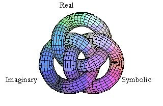

Psycho-analysis II


Senior Seminar in
Literary Criticism and Theory
GROUP READING CHOICES:
9/30/10 [Bloom, Althusser, Kristeva, Mulvey, Zizek]

Psycho-analysis II
9/30/10
BLOOM GROUP
Bloom. Anxiety of Influence
In his article bloom focuses on the following key points:
- all poetry is influenced by context, history, and previous poetry
- there is an anxiety about being influenced by predecessors that creates innovation through trying to creat something completely new
- you cannot devalue poetry by pointing out where it mimicks other poets or else you will devalue it into destruction
- the reniassance was the high poitn of poetry and innovation and everything else has come out of that
- He marks Shakespeare as the father of all English poetry..... basically because he had no anxiety about being influenced by others and is the one of the greatest poets of all time but irrelevant to this theory because of his lack of anxiety about influence (which confuses me because Shakespeare did actually look up to other works of his contemporaries.... i.e. his first play for King James I, Measure for Measure is based off the story of Promos and Cassandra by George Whetstone....and his sonnets or at least the form of them were not his own creation... he borrowed the form from an Italian...)
-Finally, what we deem to be the thesis of his essay, can be seen in the title "The Anxiety of Influence" He talks about the authors 'misprision' or misinterpretation of his predecessors (the denial of all influence of from former poets on the authors work.)Through this notion he seeks to "de-idealize our accepted accounts of how one poet helps to form another." in his mind there is no longer a difference between poetic history and poetic influence, as according to him influential poets make the history by 'misreading' one another in order to "clear imaginative space for themselves." What we gather from this is that authors deny the influence of poets before them so as to come up with something new and original for themselves but they can never fully deny it because every disciple takes away something from his master... and that is the "anxiety of influence" Poets dont want to be influenced by their predecessors (so they deny their work being a part of the things that came before) even though they cant help it.
Matea, Jane, Kat, Edward
Laura Mulvey, “Visual Pleasure and Narrative Cinema”
Reading Group 1:
[name removed], Shawn Mikulla, Carl Hayman, [name removed], [name removed]
Thursday, September 30, 2010
1. What is the thesis? Cinema offers two pleasures. “One is scopophilia…looking is…a source of pleasure” (Section A of Pleasure in Looking/Fascination with the Human Form). “The cinema…also goes further, developing scopophilia in its narcissistic aspect” (Section B of Pleasure in Looking…). Essentially, Mulvey states that cinema allows for voyeuristic pleasure and narcissistic pleasure.
2. When was this published? Why? What is the immediate context? The essay was published in 1975, when Hollywood films were typically male-centric. There were few examples of film in which women played key roles of themselves rather than as support for male characters.
3. What are the key points of evidence, supporting logic for the claim, or the key assumptions requisite to the claim? Most of the evidence that Mulvey presents is analysis of specific Hollywood films, especially film noir and detective cinema such as Alfred Hitchcock’s productions. Mulvey analyzes the roles of female characters in these movies. Some assumptions include that films were produced in a patriarchal or even masochistic society and that most film directors were male.
4. What are the key terms used? What is the style of the rhetoric? Key terms include scopophilia, phallocentrism, psychoanalysis, patriarchal, feminism, pleasure, Freud, sexuality, objectification, ego libido, and introjection. The rhetorical style is primarily logos, persuading by reasoning.
5. How might we productively use the theory? What work does it seem to do? Mulvey’s theory can be used to analyze film, to discuss the implications of voyeurism, and to argue whether films are truly masochistic or not. Mulvey’s response to scopophilic narrative inspired filmmakers to create feminist art as an alternative.
6. How does it fit with the larger topic under discussion for the week? Mulvey’s theory relates to Freudian theory by analyzing sexual symbolism, but offering a more feminist alternative as opposed to Freud’s focus on phallocentrism and masculine identity.
7. Where are points open for critique? Does the theory itself conform to what it argues? Points open for critique include whether all film is truly as masochistic as Mulvey claims it to be. Furthermore, Mulvey focuses on a masculine audience and assumes that all male viewers are masochistic and scopophilic.
8. Do you buy it? Opinions differed within our group. To some extent, the theory is applicable because it inspires us to look at film with a questioning eye and to consider whether objectification is present or not. Additionally, we realize that cinema often does choose the most aesthetically pleasing characters, not reflecting real life and reinforcing Mulvey’s claim that women are “displayed” and “coded for strong visual and erotic impact” (Woman as Image, Man as Bearer of the Look, Section A). On the other hand, we believe that not all films are anti-feminist and unfair to women. We thought of several examples in cinema in which women play important roles other than as objects of visual pleasure.